每条机会都有来处
网页展开完整摘要、日期和来源。读完可以直接去原文确认参与条件。
小宇晨报是一份按个人兴趣定制的每日简报。小宇关注摄影征集、附近展览和机器人活动，你也可以选择自己的关注范围。
读一份真实简报 ↗网页展开完整摘要、日期和来源。读完可以直接去原文确认参与条件。
取景框来自摄影，代表你选定的关注范围。星球是每天进入视野的新发现。

「我天没亮就醒了，替你翻了一遍。」用一句短问候开场，然后把机会和时间交给读者。
同一套排版系统，两版配色并排对照。图标这次不再缩在角落，而是做成实心色块、标志反白镂空，整块用进页首；问候从「一句祝福」改成瓦力式的口吻——先说自己，再把今天交给你。
两个等大的镜头眼，左眼亮、右眼暗——像瓦力那对望远镜眼，永远只看一件东西。天线上一粒暖黄是「醒着」的信号，6 秒眨一次眼。
16px 用于条目行内，22px 用于小组件问候，32px 用于网页，46px 用于空态。
| 图标整块（渐变底 + 反白标志） | 可实现 | Scriptable 的 DrawContext 可直接画圆角矩形与矢量路径；稳妥做法是把色块版导出为 3 档 PNG（22/58/76px）随脚本打包。 |
| 问候语与机器人 | 可实现 | 文案是纯文本，按系统时间切早上好 / 下午好 / 晚上好；机器人用同色 PNG。眨眼动画只在网页成立，Scriptable 里用两帧静态图或干脆不眨。 |
| 双主题切换 | 可实现 | 脚本顶部一组颜色常量，换 6 个值即可整体换肤；两版共用同一套布局函数，零改动。 |
| 玻璃模糊与背景光晕 | 概念图 | 小组件拿不到桌面壁纸做实时模糊。实现时用「半透明叠加 + 大半径径向渐变」模拟，层次能到八成，别指望真高斯模糊。 |
| 数据链路 | 不变 | 仍是 GET /api/briefing/today + 07:30 定时发布，前端只换皮。 |
取景器四角负责「看」，框里是一颗带光环的星球：每天都有一个值得看见的世界。一条闭合的倾斜轨道环分前后两层穿过球面，暖黄留给卫星与星点。中文副名沿用「小宇晨报 · 每日机会简报」。
Yu's 用 400 字重，Daily Scope 用 600 字重，字号 24.5 / 96 单位，字距 .01em。撇号使用 ASCII 直撇号 '，不是弯引号。
推荐 SF Pro Display / Inter / Helvetica Neue；中文副名用 PingFang SC，不与英文主标混排在同一行。
MORNING BRIEF · 07:30，字号 8.8，字距 .24em，全大写。这条信息是发布节奏，不随内容变化。
横版锁定四周留白 ≥ 16px；图标与文字之间的 1px 分隔线不透明度 16%，只起对齐作用，不是装饰线。